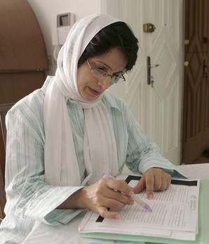

|
|

با زنان درخبر: از طرح پالایش زنان مطلقه در ایران تا لغو ممنوعيت چندزنی مردان در ليبی
چهار شنبه11 آبان 1390
تغییر برای برابری - زنان همچنان در صفحه های اصلی خبرها و دغدغه ساختار مردانه محوری هستند که به همه چیز آنان کار دارد جز حقوق شان! از حق برابر در طلاق بگویند، طرح پالایش زنان مطلقه راه می اندازند، از حق انتخاب پوشش بگویند تنها مانده که زره تنشان کنند، از حقوق نداشته شان بگویند محبوبه ها و مریم ها و فرشته ها را در بند می کنند، از حق دفاع متهم بگویند، نسرین دربندشان را تنبیه می کنند،... براستی به چه چیز زنان کاری ندارند؟
نویدمحبی:گزارش این هفته ستون گزارش هفتگی از اول آبان تا به امروز را شامل می شود،ادامه ی دستگیری افرادی که بدحجاب خوانده می شوند توسط مامورین گشت ارشاد در فصل سرما و گفتگو با یکی از دستگیرشدگان،افزایش آمار طلاق در ایران و اظهارنظرهای متفاوت مسئولان در این رابطه،محکومیت مریم قربانی فر فعال حقوق زنان به سه سال حبس و وضعیت وخیم جسمانی محبوبه کرمی در زندان،و اظهار نظر رئیس شورای انتقالی لیبی در رابطه با لغو ممنوعیت چندهمسری از جمله مسائلی است که در گزارش پیش رو به آن ها اشاره شده است.

برخورد با زنان به دلیل پوشش شان همچنان ادامه دارد، حتی در فصل سرما...
با وجود آنکه مدت هاست از آغاز طرح حجاب و عفاف در تابستان می گذرد اما وقتی پای اسماعیلی مقدم فرمانده نیروی انتظامی به عنوان مجری و مسئول برخورد با این پدیده! در محافل عمومی و کنفرانس های خبری به میان می آید همچنان از ادامه برخورد مجدانه پلیس با آنچه بدحجابی خوانده می شود می گوید.اسماعیلی مقدم اخیرا در حاشیه مراسم تقدیر از عوامل یکی از سریال های تلویزیونی گفته که طرح حجاب و عفاف و برخورد نیروی انتظامی با بدحجابان تابستان و زمستان ندارد و عنوان کرده که :" ما مترها و شاخصهایی داریم که با آنها کارهای خودمان را مورد سنجش قرار میدهیم و سازمانهای فرهنگی دیگری هم هستند که این اقدامات مشابه را انجام میدهند"در ارتباط با همین قضیه با نگار که اتفاقا از فعالان حقوق زنان بوده که دیروز در پارک لاله تهران دستگیر شده گفتگو کردیم، نگار در رابطه با تجربه ی خود اینطور می گوید:"من شخصا فکر نمی کردم در این فصل سال که به شدت بارونی بود ماموران گشت ارشاد ماموریت داشته باشند، این تنها حدس و گمان ما هست که فکر می کردیم که با گذشت تابستان گشت ارشاد هم متوقف شده است. نکته ای که جالب توجه بود این هست که الان گشت های ارشاد به صورت ثابت فقط در مناطق خاصی نمی ایستند و به صورت سیار در خیابان ها و کوچه پس کوچه ها حرکت کرده و زنان و دختران رو بازداشت می کنند".از نگار در رابطه با زمان دستگیری و احساسی که در لحظه ی بازداشت داشته پرسیدم اینطور گفت که:"سر پارک لاله مشغول قدم زدن بودم که به شدت خلوت بود لحظه ای صدای چند ماموری را شنیدم که به من گفتند خانوم چند لحظه تشریف بیارید..یک آن خیلی کوتاه در درونم حسی داشتم که نمی توانم بگویم ترس یا عدم امنیت بود اما هرچه بود در هر صورت احساس خوبی نبود...اما بعد از اینکه سوار ون شدم کاملا ریلکس و آرام بودم و اصلن برایم مهم نبود که چه اتفاقی افتاده یا قرار هست که بیفتد...اما در داخل ون وقتی صدای جیغ و گریه و زاری های دختران جوان رو می شنیدم برای من کمی آزار دهنده بود..ما واقعا با حضور در خیابان ها احساس امنیت نمی کنیم"
در ادامه ی بحث حجاب و عفاف حجت الاسلام خاموشی رئیس سازمان تبلیغات اسلامی ضمن انتقاد از عدم اجرای سند عفاف و حجاب ،برای سرپوش گذاشتن بر این واقعیت مسلم که اکثریت زنان و دخترانی ایرانی با پوشش های ناهمگون با خواست حاکمیت در اماکن عمومی ظاهر می شوند مدعی شده که "برخی تصور می کنند که در جامعه زنان محجبه کمتر هستند در حالیکه تردد شهری زنان محجبه کمتر است نه تعداد آنها"،وی حضور انبوه! زنان در نمازجمعه های سراسر کشور و مناسبت های دولتی را شاهدی بر ادعای خود دانسته اما این در حالی است که بسیاری از صاحب نظران معتقدند که حضور مردم در مناسبت های دولتی ،گزینشی و همراه با تجهیز امکانات و همینطور سازماندهی از مدت ها قبل می باشد.
تلاش برای کاهش آمار طلاق و ادامه ی محدودیت های قانونی برای زنان
افزایش آمار طلاق در ایران مسئولان دولتی را به فکر چاره جویی و یافتن راه حلی برای کاهش وقوع آن انداخته است.بر اساس آماری که اخیرا سازمان ثبت احوال ایران منتشر کرده شمار طلاق در شش ماه نخست سال ۱۳۹۰ نسبت به مدت مشابه سال قبل ۴/ ۵ درصد رشد داشته و ۶۹۲ هزار و یک واقعه طلاق به ثبت رسیده است و آماری دیگری خبر از آن دارد که از هر 4 ازدواج در تهران یکی از آن ها به طلاق می انجامد.در همین رابطه مریم مجتهدزاده رئیس مرکز امور زنان و خانواده ریاست جمهوری خبر داده که قرار است لایحه پیشگیری از طلاق با حضور رئیس دولت و وزرا در ستاد ملی زن و خانواده بررسی شود.زهرا سحادی معاون خانواده مركز امور زنان نیز با بیان اینکه "در سالهاي 88 - 89 تعداد واقعه ازدواج تقريبا به يك ميزان ثابت مانده ولی تعداد واقعه طلاق بيشتر شده،خبر از اجراي طرح «مطلع مهر» و پی ریزی طرح دیگری به «انتظام خانواده» به منظور کاهش آمار طلاق در کشور داده است.
اما اینها تنها اظهارنظرهای مطرح شده نیستند،داریوش قنبری عضو کمیسون اجتماعی مجلس گفته که "لازم است مجلس و دولت تدابیری بیاندیشند تا زوجین به راحتی طلاق را به عنوان بهترین گزینه برای حل اختلافهای خود انتخاب نکنند".در خبری دیگر مسعود عادلی رئیس کمیته امداد جیرفت در گفتوگو با خبرنگاران از اجرای طرح پالایش زنان مطلقه توسط این نهاد حمایتی خبر داد و خاطرنشان کرد: از این پس زنان مطلقه به عنوان مددجو زیر پوشش این نهاد قرار نمیگیرند.
با توجه به اظهارنظرهای مسئولان مربوطه به نظر می رسد اقدامات وسیعی به منظور مقابله با این معضل اجتماعی در جریان است اما فعالان حقوق زنان معتقدند به دلیل عدم وجود قوانین حمایتی و محدودیت های قانونی روز به روز حلقه های تصمیم گیری برای زنان به جهت جدایی از همسرانشان تنگ تر می شود و همین طولانی شدن پروسه طلاق تبديل به معضلي در زندگي اين زنان مطلقه شده است و قدرت بازگشت به زندگي مشترک از آنها گرفته است.
در همین رابطه یکی از وکلای دادگستری در گفتگو با ایسنا "با تاکيد بر اينکه تلاش سيستم قضايي در حل مشکلات زناني که زندگيشان دست خوش بحران يا درحالت معلق به سر مي برند بسيار کم است، بيان کرد: نظام قضايي بايد براي زناني که به هر دليلي همسر آنها غايب، بلاتکليف و يا معلق هستند تلاش بيشتري بکند تا حقوق آنان پايمال نشود".
با زنان در زندان ها
در هفته ای که گذشت شاهد ادامه ی فشارها بر فعالان زنان بوده ایم. مریم قربانیفر فعال حقوق زنان از سوی شعبه ۲۸ دادگاه انقلاب به ریاست قاضی مقیسه با اتهامات «اقدام علیه امنیت ملی» و «اجتماعی و تبانی علیه نظام» به سال حبس تعزیری محکوم شد.
گزارشها حاکی از احضار و بازداشت سحر موسوی، از فعالین سابق دانشجویی دانشگاه آزاد و دانشجوی محروم از تحصیل تحصیلات تکمیلی، طی روزهای گذشته است.به گزارش کمیته گزارشگران حقوق بشر، سحر موسوی، روز چهارشنبه ۲۷ مهر ماه ۹۰، در پی احضار به دفتر پیگیری وزارت اطلاعات، بازداشت و به مکان نامعلومی منتقل شد.
در خبری دیگر سازمان عفو بین الملل خبر داده که مرضیه وفامهر سینماگر ایرانی و همسر ناصر تقوایی که پیش از این به یک سال جبس و 90 ضربه شلاق محکوم شده بود در دادگاه تجدید نظر، حکم ۹۰ ضربه شلاق او ، به یک میلیون و دویست هزار تومان جزای نقدی تبدیل شد. بر اساس رای این دادگاه، حکم یک سال زندان دادگاه بدوی هم به سه ماه زندان تقلیل پیدا کرد. مرضیه وفامهر پس از بیش از سه ماه، دوشنبه شب، دوم آبانماه آزاد شد.

بنا به گزارش مجموعه فعالان حقوق بشر در ایران، محبوبه کرمی زندانی سیاسی محبوس در زندان اوین از مدتی پیش به دلیل ابتلا به کم خونی به سبب پایین آمدن هموگلوبین خونش، دچار سر دردهای شدیدی شده است. وی هم چنین به دلیل تشدید این بیماری دوبار در بند به حالت نیمه بیهوش درآمده است. پزشک زندان اوین به دلیل ابتلای وی به کم خونی احتمال اینکه وی به حالت کما برود را نیز داده است. بر اساس این تشخیص خانواده وی نیز اقدام به ارسال دارو به زندان کردهاند و هم چنین درخواست مرخصی استعلاجی نیز از سوی این زندانی ابلاغ شده است.همچنین در خبری دیگر حکم شش ماه حبس تعزیری بهاره به اتهام «تبلیغ علیه نظام» در شعبه ۵۴ دادگاه تجدیدنظر استان تهران تایید شد. بر اساس این حکم که در زندان به فعال دانشجویی ابلاغ شده است، حکم حبس بهاره هدایت در مجموع به ده سال زندان افزایش مییابد.

نسرین ستوده وکیل زندانی در نامه ای پر احساس و شورانگیز به دو فرزندش به وصف احساس خود نسبت به آنها و دلایل اصرارش بر آنچه اجرای تمامیت قانون خوانده پرداخته است ،در بخشی از این نامه که به بهانه ممنوعیت ملاقات حضوری به دلیل نپوشیدن چادر اجباری از سوی خانم ستوده نوشته شده بود آمده:" عزیزانم سالها قبل قانونی تصویب شد که همهی زنان ایرانی را ملزم به استفاده از حجاب شرعی نمود. زنانی که حجاب را قبول داشتند یا نداشتند، این حجاب را رعایت کردند، زیرا اگر رعایت نمیکردند طبق قانون مجازات میشدند، اما اکنون سخن مسئولان زندان آن است که چون شما اسیر مائید باید از حجابی مضاعف (یعنی چادر) استفاده کنید، در حالیکه نه تنها قانون چنین شرطی را برای حجاب نگذاشته است بلکه حتی زندانیان سیاسی از استفاده از لباس فرم زندان معاف هستند. من به قصد “مقاومت” کاری نکردم. به قصد اجرای قانون در تمامیتاش اقدام کردم و از پوشیدن چادر امتناع نمودم".
همچنین در هفته ی گذشته بیش از 350 تن از فعالان حقوق زنان و حامیان آنها نسبت به حکم سنگین فرشته شیرازی اعتراض کردند در این بیانیه ضمن تاکید بر فعالیتهای مسالمت آمیز وی، همچنین تصریح بر آزادی بیان و حق انتقاد، از مسئولان قضایی و دولتی خواسته شده تا نسبت به بهبود شرایط نگهداری زنان زندانی و در نظر گرفتن بیماری این فعال زن، امکان تماس تلفنی و ملاقات حضوری وی را با وکیل و خانواده اش فراهم کرده و تا تشکیل دادگاه تجدیدنظر که در صورت رعایت انصاف و استقلال در بررسی پرونده منجر به نقض حکم بدوی خواهد شد، فرشته شیرازی را آزاد کنند.
با زنان دیگر کشورها
دویچه وله گزارش داده که در صعنا، پایتخت یمن، صدها زن معترض به خشونتها و کشتار نیروهای دولتی، در یکی از خیابانهای اصلی شهر تجمع کرده، حجاب سنتی سیاه رنگ خود را که به "مکرمه" معروف است درآورده و روی هم ریختند و به آتش کشیدند. آنها در حین به آتش کشیدن مکرمههای خود شعار میدادند که "چه کسی از زنان یمنی در برابر خشونتهای وحشیانه محافظت خواهد کرد؟".
به گزارش بی بی سی راشد غنوشی رهبر حزب اسلام گرای تونس که در انتخابات برگزار شده در تونس بیشترین آرا را کسب کرده در رابطه با نگرانی های به وجود آمده در مورد حقوق زنان در یک کنفرانس خبری گفت: "حزب نهضت تاکید میکند که خود را نسبت به حقوق زنان متعهد میداند، خود را نسبت به تقویت نقش آنها در تصمیمگیریهای سیاسی متعهد میداند، و نمیخواهد که آنها دستاوردهای اجتماعی خود را از دست بدهند. او اضافه کرد که هیچ اقدامی برای وادار به استفاده از روسری انجام نخواهد گرفت.
اما خبر نه چندان خوب و نگران کننده این هفته اظهار نظر مصطفی عبدالجلیل رئیس شورای ملی انتقالی لیبی است که گفته که "شريعت اسلامی، بنيان و اساس قانون اساسی در ليبی جديد خواهد بود." وی همچنين از لغو ممنوعيت چندهمسری در ليبی خبر داد که این مساله موجی از نگرانی ها و نارضایتی ها را در سطح جهانی در رابطه با آینده دموکراسی در لیبی دامن زده است.
بان کی - مون، دبیر کل سازمان ملل متحد، خواهان افزایش حضور زنان در رهبری مأموریت های حافظ صلح این سازمان شد. به نظر وی، این رقم باید تا سال 2014 حداکثر 30 درصد و تا سال 2020 حداقل 40 درصد باشد.به گزارش خبرگزاری اتریش، وی با اشاره اعطای جایزه صلح نوبل امسال به سه زن، اظهار داشت که این رویداد باید انگیزه ای تشویق کننده برای دولت ها و نهادهای بین المللی باشد تا زنان بیشتری را در تصمیمات مهم جهت پیشگیری از نزاع ها و یا حل آن ها شرکت دهند.